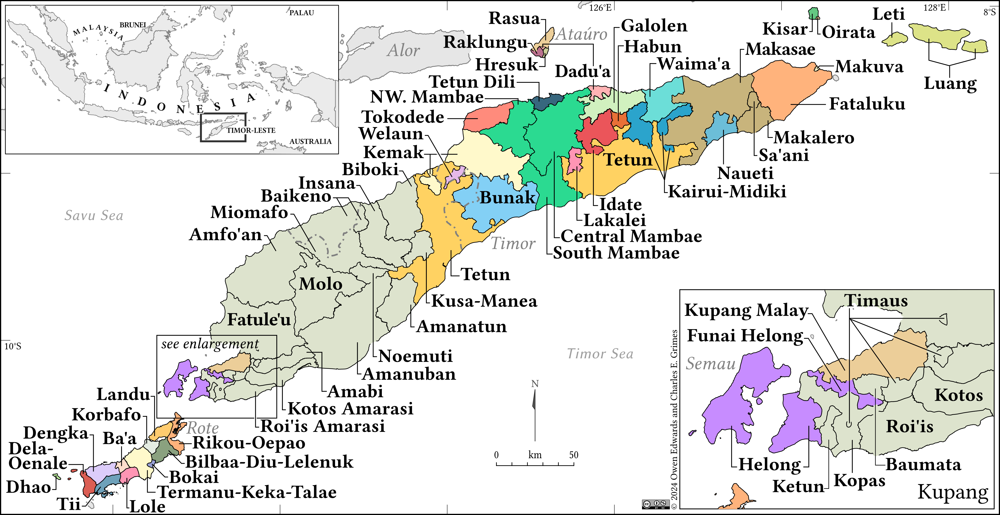
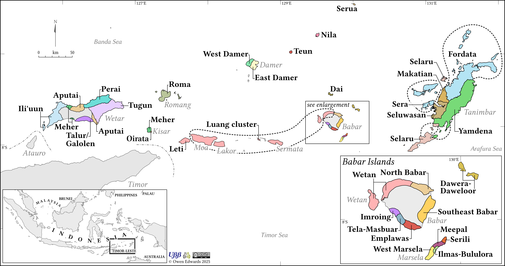

Maps
Maps of Eastern Indonesia and Timor Leste



Maps from The Austronesian languages of eastern Indonesia and Timor-Leste: unravelling their prehistory and classification
These are select maps from the book: The Austronesian languages of eastern Indonesia and Timor-Leste: unravelling their prehistory and classification published by Language Science Press available to download here.
![[PNG]](https://github.com/OwenAmarasi/Maps-from-The-Austronesian-languages-of-eastern-Indonesia-and-Timor-Leste/blob/main/Fig-01-4-LingWallacea.png){kind=link}
![[PNG]](https://github.com/OwenAmarasi/Maps-from-The-Austronesian-languages-of-eastern-Indonesia-and-Timor-Leste/blob/main/Fig-01-5-eIN-TL-Subgroup.png){kind=link}
![[PNG]](https://github.com/OwenAmarasi/Maps-from-The-Austronesian-languages-of-eastern-Indonesia-and-Timor-Leste/blob/main/Fig-02-5-AN-Pap-Timor.png){kind=link}
![[PNG]](https://github.com/OwenAmarasi/Maps-from-The-Austronesian-languages-of-eastern-Indonesia-and-Timor-Leste/blob/main/Fig-02-6-AN-Pap-Halm.png){kind=link}
![[PNG]](https://github.com/OwenAmarasi/Maps-from-The-Austronesian-languages-of-eastern-Indonesia-and-Timor-Leste/blob/main/Fig-03-1-BL-Langs.png){kind=link}
![[PNG]](https://github.com/OwenAmarasi/Maps-from-The-Austronesian-languages-of-eastern-Indonesia-and-Timor-Leste/blob/main/Fig-04-1-TB-Langs.png){kind=link}
![[PNG]](https://github.com/OwenAmarasi/Maps-from-The-Austronesian-languages-of-eastern-Indonesia-and-Timor-Leste/blob/main/Fig-06-1-Aru-Langs.png){kind=link}
![[PNG]](https://github.com/OwenAmarasi/Maps-from-The-Austronesian-languages-of-eastern-Indonesia-and-Timor-Leste/blob/main/Fig-07-4-CentMal-Langs.png){kind=link}
![[PNG]](https://github.com/OwenAmarasi/Maps-from-The-Austronesian-languages-of-eastern-Indonesia-and-Timor-Leste/blob/main/Fig-08-2-Tal-Langs.png){kind=link}
![[PNG]](https://github.com/OwenAmarasi/Maps-from-The-Austronesian-languages-of-eastern-Indonesia-and-Timor-Leste/blob/main/Fig-11-3-STB-Langs.png){kind=link}
Maps from The Oxford Guide to the Malayo-Polynesian Languages of Southeast Asia
These are the maps from the Oxford Guide to the Malayo-Polynesian Languages of Southeast Asia. They are made available here for the use of authors and others who may want to use the maps. While the volume itself is behind a paywall, The maps are licensed as CC BY-NC 4.0, meaning you are free to redistribute and adapt the maps, as long as you provide appropriate attribution to the creator (Owen Edwards) and do not use them for commercial purposes. If you are reusing a map in an academic publication or presentation, probably the best way to cite it would be something like: ” Map by Owen Edwards from XXX” where XXX is the citation to the the chapter the map appears in.
![[PNG]](https://github.com/OwenAmarasi/Maps-from-the-Oxford-Guide-to-the-Malayo-Polynesian-Languages-of-Southeast-Asia/blob/main/08-1_BorneoRivers.png){kind=link}
![[PNG]](https://github.com/OwenAmarasi/Maps-from-the-Oxford-Guide-to-the-Malayo-Polynesian-Languages-of-Southeast-Asia/blob/main/08-2_RejangRiver.png){kind=link}
![[PNG]](https://github.com/OwenAmarasi/Maps-from-the-Oxford-Guide-to-the-Malayo-Polynesian-Languages-of-Southeast-Asia/blob/main/09-1_Malay.png){kind=link}
![[PNG]](https://github.com/OwenAmarasi/Maps-from-the-Oxford-Guide-to-the-Malayo-Polynesian-Languages-of-Southeast-Asia/blob/main/20-1_MSEA.png){kind=link}
![[PNG]](https://github.com/OwenAmarasi/Maps-from-the-Oxford-Guide-to-the-Malayo-Polynesian-Languages-of-Southeast-Asia/blob/main/21-1_Madagascar.png){kind=link}
![[PNG]](https://github.com/OwenAmarasi/Maps-from-the-Oxford-Guide-to-the-Malayo-Polynesian-Languages-of-Southeast-Asia/blob/main/22-1_Papuan.png){kind=link}
![[PNG]](https://github.com/OwenAmarasi/Maps-from-the-Oxford-Guide-to-the-Malayo-Polynesian-Languages-of-Southeast-Asia/blob/main/24-1_NPhilippine.png){kind=link}
![[PNG]](https://github.com/OwenAmarasi/Maps-from-the-Oxford-Guide-to-the-Malayo-Polynesian-Languages-of-Southeast-Asia/blob/main/25-1_Philippines.png){kind=link}
![[PNG]](https://github.com/OwenAmarasi/Maps-from-the-Oxford-Guide-to-the-Malayo-Polynesian-Languages-of-Southeast-Asia/blob/main/25-1_PhilippinesLegend.png){kind=link}
![[PNG]](https://github.com/OwenAmarasi/Maps-from-the-Oxford-Guide-to-the-Malayo-Polynesian-Languages-of-Southeast-Asia/blob/main/26-1_Sama.png){kind=link}
![[PNG]](https://github.com/OwenAmarasi/Maps-from-the-Oxford-Guide-to-the-Malayo-Polynesian-Languages-of-Southeast-Asia/blob/main/27-1_BorneoLang.png){kind=link}
![[PNG]](https://github.com/OwenAmarasi/Maps-from-the-Oxford-Guide-to-the-Malayo-Polynesian-Languages-of-Southeast-Asia/blob/main/28-1_Sumatra.png){kind=link}
![[PNG]](https://github.com/OwenAmarasi/Maps-from-the-Oxford-Guide-to-the-Malayo-Polynesian-Languages-of-Southeast-Asia/blob/main/29-1_Malayic.png){kind=link}
![[PNG]](https://github.com/OwenAmarasi/Maps-from-the-Oxford-Guide-to-the-Malayo-Polynesian-Languages-of-Southeast-Asia/blob/main/30-1_Chamic.png){kind=link}
![[PNG]](https://github.com/OwenAmarasi/Maps-from-the-Oxford-Guide-to-the-Malayo-Polynesian-Languages-of-Southeast-Asia/blob/main/31-1_Java.png){kind=link}
![[PNG]](https://github.com/OwenAmarasi/Maps-from-the-Oxford-Guide-to-the-Malayo-Polynesian-Languages-of-Southeast-Asia/blob/main/32-1_Bali-NTB.png){kind=link}
![[PNG]](https://github.com/OwenAmarasi/Maps-from-the-Oxford-Guide-to-the-Malayo-Polynesian-Languages-of-Southeast-Asia/blob/main/33-1_SulawesiGroups.png){kind=link}
![[PNG]](https://github.com/OwenAmarasi/Maps-from-the-Oxford-Guide-to-the-Malayo-Polynesian-Languages-of-Southeast-Asia/blob/main/33-2_SulawesiLanguages.png){kind=link}
![[PNG]](https://github.com/OwenAmarasi/Maps-from-the-Oxford-Guide-to-the-Malayo-Polynesian-Languages-of-Southeast-Asia/blob/main/33-2_SulawesiLegend.png){kind=link}
![[PNG]](https://github.com/OwenAmarasi/Maps-from-the-Oxford-Guide-to-the-Malayo-Polynesian-Languages-of-Southeast-Asia/blob/main/34-1_Flores.png){kind=link}
![[PNG]](https://github.com/OwenAmarasi/Maps-from-the-Oxford-Guide-to-the-Malayo-Polynesian-Languages-of-Southeast-Asia/blob/main/35-1_TimorSMaluku.png){kind=link}
![[PNG]](https://github.com/OwenAmarasi/Maps-from-the-Oxford-Guide-to-the-Malayo-Polynesian-Languages-of-Southeast-Asia/blob/main/36-1_CMaluku.png){kind=link}
![[PNG]](https://github.com/OwenAmarasi/Maps-from-the-Oxford-Guide-to-the-Malayo-Polynesian-Languages-of-Southeast-Asia/blob/main/37-1_SHWNG.png){kind=link}
![[PNG]](https://github.com/OwenAmarasi/Maps-from-the-Oxford-Guide-to-the-Malayo-Polynesian-Languages-of-Southeast-Asia/blob/main/40-1_Malagasy.png){kind=link}
![[PNG]](https://github.com/OwenAmarasi/Maps-from-the-Oxford-Guide-to-the-Malayo-Polynesian-Languages-of-Southeast-Asia/blob/main/48-1_poss.png){kind=link}
![[PNG]](https://github.com/OwenAmarasi/Maps-from-the-Oxford-Guide-to-the-Malayo-Polynesian-Languages-of-Southeast-Asia/blob/main/48-2_poss.png){kind=link}
![[PNG]](https://github.com/OwenAmarasi/Maps-from-the-Oxford-Guide-to-the-Malayo-Polynesian-Languages-of-Southeast-Asia/blob/main/48-3_poss.png){kind=link}
![[PNG]](https://github.com/OwenAmarasi/Maps-from-the-Oxford-Guide-to-the-Malayo-Polynesian-Languages-of-Southeast-Asia/blob/main/49-1_direction.png){kind=link}
![[PNG]](https://github.com/OwenAmarasi/Maps-from-the-Oxford-Guide-to-the-Malayo-Polynesian-Languages-of-Southeast-Asia/blob/main/51-1_notyet.png){kind=link}